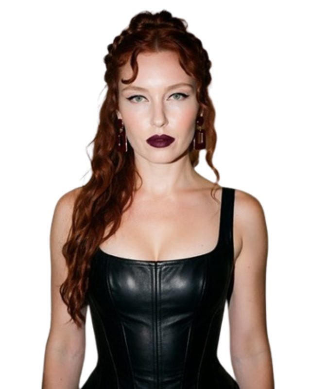

StayGone™ is your weapon against coercive control. Find every way he's still watching, lock him out without tipping him off, and document everything into a court-ready case - from your phone.
It starts with what I call “impossible knowledge.” He always knows things he shouldn’t: where you are, what you’ve been doing, who you’re talking to. And he makes sure you know he knows. Say it out loud and it gets dismissed as coincidence or paranoia. It has a name: coercive control. Naming it is the first step to documenting it.
Ten guided modules walk you through your accounts, devices, home, vehicle, finances, social media, and your children’s devices. Every access point, found.
Step-by-step instructions in the right order, so nothing alerts him before you’re ready. Discreet Mode hides the app when he’s near.
Every incident logged, timestamped, and mapped to the laws in your jurisdiction. Court-ready reports, automatically.
A guided walkthrough of every place he could still be watching, tracking, or reaching you. You answer, StayGone flags the risk level and gives you the exact steps to close each gap.
Disguises StayGone as a hydration tracker for the moments he’s near your phone. One tap back to your case.
Document every incident with date, type, and details. The pattern over time is what builds a legal case.
A step-by-step walkthrough for pulling your own authenticated records from Google, Apple, Meta, Microsoft, and your carrier. No subpoena required - these are the records courts actually accept.
Upload a file and StayGone fingerprints it with SHA-256, identifies the format, and explains what it can and cannot prove - surfacing indicators and pointing you to the native original.
Your evidence log, journal, audit answers, and scan results are stored on your phone and encrypted at rest wherever your device’s secure storage is available. If secure encryption isn’t available on your device, StayGone tells you rather than pretending otherwise. The one time your content leaves your phone is when you tap Analyze My Evidence, and only for the content you choose. More on that below.
StayGone maps what you’ve documented to the legal frameworks covering the US, Canada, the UK, and Australia, so you can walk into your attorney’s office informed instead of overwhelmed. Plain-language summaries, not legal advice.
Your findings and incidents compiled into a clear, court-ready format - organized to hand straight to an attorney.
A community of survivors and advocates with weekly answers from Kyērstin herself. No algorithm, no noise.
Runs entirely on your phone. When you scan a file for signs it may have been altered, that file never leaves your device. The fingerprinting and format checks happen locally, and nothing is transmitted.
Different, and it only runs when you tap Analyze. When you do, the incident text and any files you attach, such as screenshots, photos, and PDFs, are sent to our analysis service, which uses Anthropic's language models to generate your analysis. Our own servers don't store your evidence. Anthropic processes it and deletes it within 30 days, except where content is flagged by its safety systems or retention is legally required, and does not use it to train its models. This only happens when you choose it, on the evidence you choose.
Answer honestly and StayGone tells you exactly what to do, in the order that keeps you safe.
Discreet Mode disguises StayGone as an ordinary water-intake app for the moments he's near you. One tap returns you to your case. Nothing tips him off before you're ready.

“I built StayGone to be the exact weapon against digital harassment and coercive control I wish I’d had when I was clawing my way through family court.”
Kyērstin is a digital forensics investigator whose cybersecurity background includes Sandia National Laboratories and the Cybersecurity and Infrastructure Security Agency. She holds CompTIA CySA+, Security+, Network+, CSAP, CIOS and CSIS. She founded APOM Research, where she produces court-ready digital evidence packages for family-law and civil cases, and for referral to law enforcement, involving cyberstalking, technology-facilitated abuse, and cryptocurrency tracing. She also wrote a book for the attorneys who try these cases. StayGone puts that same methodology into your hands.
StayGone and APOM Research aren't affiliated with, endorsed by, or representing any government entity.
Every week she shows up in the private subscriber community and answers real questions from real cases - your situation, your evidence, your next move.
Your subscription includes a vetted community of survivors, advocates, and Kyērstin herself. Weekly audio drops. Real answers. No algorithm, no noise.
Kyērstin was able to put the evidence together to show the abusive behaviors and control I was dealing with. I felt defeated, exhausted, and in many ways alone dealing with inexcusable treatment. She gave me hope, compassion, and encouragement to feel that I could continue to make things better for me and my children. I will forever be grateful for her and the work she did for my case.
This is for the woman who refuses to walk into court without a fight.
Take a breath. StayGone turns what's happening to you into something that holds up.
Know a woman whose ex somehow always knows where she is?
Send her this page. Most women don't know there's a name for what's happening to them, or that there's anything they can do about it before court.